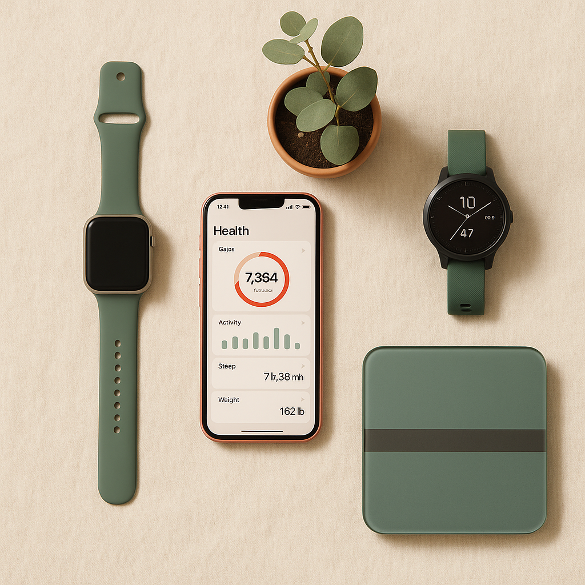

klai เชื่อมข้อมูลจากมือถือและอุปกรณ์ IoT ของคุณเข้ากับ ChatGPT
เพื่อให้ AI agent ช่วยทั้งวางแผนสุขภาพ และสร้าง .md
ลดงานประจำให้คุณมีเวลาดูแลตัวเองมากขึ้น
วันนี้ HRV ลดลงเล็กน้อย แนะนำเลื่อน workout หนัก ไปวันพรุ่งนี้ ผมร่าง daily standup .md ไว้ให้แล้ว — เปิดดูเลยไหม?
ใช้ผ่าน ChatGPT ที่คุณใช้อยู่แล้ว ไม่ต้องเรียนรู้อะไรใหม่
ข้อมูลสุขภาพอยู่ในบัญชีของคุณ เพิกถอนได้ทุกเมื่อ
ผลลัพธ์เป็นไฟล์ที่ paste ใส่ Notion / Obsidian / Slack ได้ทันที
ออกแบบให้ setup ครั้งเดียว ใช้ได้ตลอด — ไม่ต้องเปิดแอป ไม่ต้องอัปเดต ไม่ต้องเรียนรู้อะไรใหม่

เชื่อม Apple Watch, Garmin, Fitbit, Withings หรือ iPhone Health เข้ากับ klai บัญชีเดียว
ใส่ klai API key ใน Custom GPT ของคุณ — หรือใช้ MCP server ที่เราเตรียมไว้ให้
ขอให้ ChatGPT วิเคราะห์ การนอน, สร้าง wellness plan, หรือสร้าง template งานประจำ
ทำไม Markdown? เพราะมันคือ format ที่ Notion, Obsidian, Slack, Email และ AI agent ทุกตัวใช้ได้ — ไม่ติด vendor, ไม่ต้องแปลง, copy แล้ว paste จบ
# Wellness Plan — Peak | 8–14 พ.ค. > Generated by klai · Focus: Sleep recovery ## สรุปสถานะ | Metric | ค่าเฉลี่ย | เป้า | |---|---|---| | Sleep | 6.1h | 7.5h ⚠️ | | HRV | 38ms | 45ms+ ⚠️ | | Steps | 5,847 | 8,000 ⚠️ | ## Plan สัปดาห์นี้ 🌙 Sleep priority — bedtime 22:30 🚶 Movement — เดินเที่ยง 15 นาที 🧘 Stress recovery — หายใจ 4-7-8
klai ไม่ใช่อีกหนึ่ง dashboard ที่คุณต้องเปิดดู — เป็น layer ที่ทำให้ AI ที่คุณใช้อยู่ ฉลาดเรื่องสุขภาพคุณขึ้น
ChatGPT, Claude, Gemini, MCP — ที่ไหนมี LLM, ที่นั่นใช้ klai ได้
ไม่มีปุ่ม ไม่มี dashboard "วิเคราะห์การนอน 14 วันแล้วทำ plan ให้หน่อย" จบ
งานประจำที่ AI ทำให้แทน = เวลาเดิน, นอน, ออกกำลังที่ได้คืน
ฟรีตลอดสำหรับ personal use · 10 .md generation/วัน · ไม่ต้องใส่บัตร